História de Inazuma Eleven:
Eiyuutachi no Victory Road
Esta página trata especificamente de Inazuma Eleven: Eiyuutachi no Victory Road (イナズマイレブン 英雄たちのヴィクトリーロード). A nomenclatura adota os nomes japoneses romanizados, com os nomes em kanji ou kana quando disponibilizados oficialmente; os nomes da adaptação americana não são utilizados.
Conteúdo revisado: o enredo, os nomes e a estrutura dos modos foram conferidos em páginas oficiais da LEVEL-5, na enciclopédia oficial de jogadores e em um guia pós-lançamento de capítulos.
Uma nova história, 25 anos depois
O Story Mode (ストーリーモード) se passa 25 anos após o primeiro Inazuma Eleven. Em vez de retornar imediatamente à Raimon ou repetir a estrutura de uma geração anterior, a história começa em Kyūshū, no Colégio Nagumohara (南雲原中). É nesse lugar, apresentado como uma escola sem futebol, que o protagonista Sasanami Unmei (笹波 雲明) decide estudar. Paralelamente, o Colégio Raimon (雷門中) se tornou a grande referência do futebol escolar nacional, e seu principal talento é Endou Haru (円堂 ハル), filho de Endou Mamoru e um jogador descrito oficialmente como excepcional.
A contradição entre os dois é o eixo da narrativa. Unmei procura uma escola onde o futebol não faça parte da sua vida; Haru vive no centro de uma instituição vencedora, cercado pela herança do nome Endou e pela expectativa de continuar uma tradição. Quando as trajetórias dos dois se aproximam, a pergunta deixa de ser apenas qual time vencerá: a campanha passa a investigar o que faz alguém voltar a acreditar em um esporte, como um grupo de desconhecidos se transforma em equipe e se a força de um time pode nascer justamente de um lugar que não tinha futebol.
Um protagonista que escolheu ficar longe do futebol
Unmei chega a Nagumohara carregando uma decisão aparentemente simples: estudar em uma escola onde não exista um clube de futebol. Essa escolha o coloca em uma posição incomum para a série. Ele não começa a aventura como o capitão de um time pronto nem como um aluno que precisa apenas descobrir sua técnica especial. O movimento inicial é de recusa. O futebol está presente no mundo, mas Unmei tenta construir sua rotina em um espaço onde ele não o alcance.
A escola, porém, é formada por pessoas que não cabem em uma única explicação. A convivência com os alunos, os caminhos pela cidade e os pequenos confrontos do início revelam que o futebol não desaparece só porque um clube deixou de existir. Aos poucos, as relações construídas fora do campo criam as condições para que Nagumohara volte a ter uma equipe. O primeiro capítulo, Kimi wa Soccer ga Dekiru, transforma a pergunta do título — “você consegue jogar futebol?” — em uma provocação à própria trajetória de Unmei.
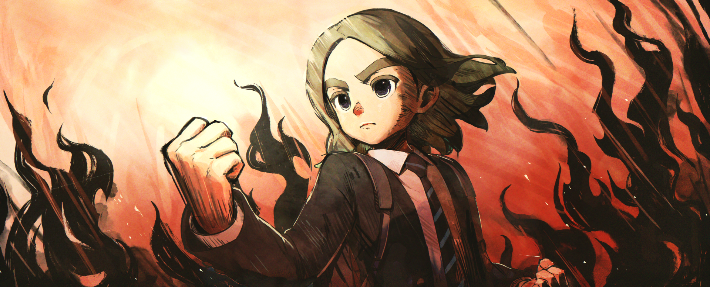
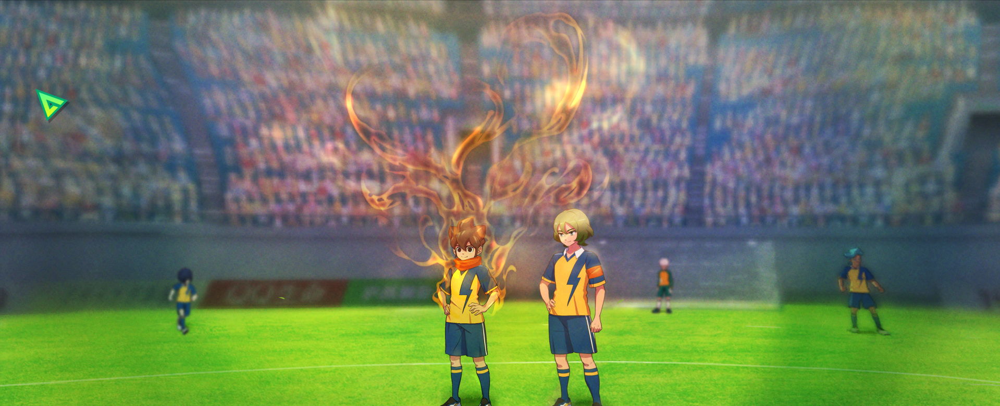
A formação de Nagumohara
A campanha principal é organizada em nove capítulos. Eles não funcionam apenas como uma lista de partidas: cada etapa adiciona um integrante, um problema de convivência, uma nova ferramenta de treinamento ou um adversário que revela o quanto a equipe ainda precisa crescer. A progressão começa em atividades escolares e batalhas locais, passa pela montagem de um elenco e chega a jogos contra escolas conhecidas, até a final contra Raimon.
Os títulos japoneses são mantidos abaixo para que a página possa ser consultada junto da versão original. A narrativa foi ampliada a partir dos acontecimentos confirmados nos guias de capítulos; quando um trecho interpreta o significado dramático de uma etapa, essa leitura é apresentada como contexto, não como uma fala oficial de personagem.
Você sabe jogar futebol.
O início acompanha a adaptação de Unmei à nova escola e a descoberta de que a ausência de um clube não significa ausência de conflitos. Antes de qualquer grande partida, ele precisa entender os rumores que circulam entre os alunos e atravessar uma sequência de encontros cotidianos, incluindo o primeiro contato com Sakurazaki Jouji (桜咲 丈二) e Kisoji Heita (木曽路 兵太). A dupla apresenta duas forças que vão marcar Nagumohara: a presença física e explosiva de Sakurazaki e o movimento inquieto de Kisoji.
O capítulo também usa a cidade para apresentar o tom da nova aventura. A perseguição ao misterioso Umi Bouzu, a passagem pela área costeira, o restaurante de udon e os confrontos menores colocam Unmei em contato com pessoas que não parecem pertencer a uma história de futebol. Ao final, a busca por um espaço para o clube e a formação do primeiro núcleo fazem Nagumohara deixar de ser apenas “a escola sem futebol”. O time ainda não está pronto, mas já existe uma razão para que os alunos voltem a se encontrar.
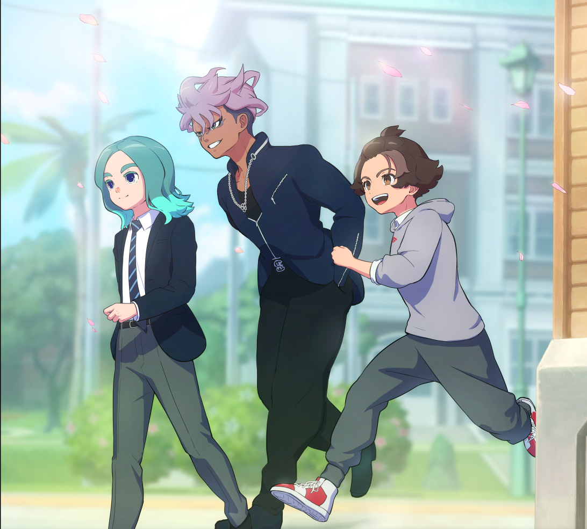
Da adversidade ao ápice
O segundo capítulo trabalha a ideia de transformar um começo precário em uma possibilidade real. O grupo ainda não possui a estrutura de uma equipe, e a procura por novos companheiros passa por lugares que não são campos de futebol. A investigação leva Unmei até Shinohara Raika (忍原 来夏), uma aluna popular, associada à dança e à vida social da escola. Em vez de simplesmente convidá-la para um treino, a história aproxima os dois por meio de um desafio de dança.
A entrada de Raika é importante porque Nagumohara deixa de ser um grupo reunido somente por habilidade esportiva. Sua personalidade expansiva muda o ritmo das conversas e dos treinamentos, enquanto o confronto de dança coloca Unmei diante de uma forma diferente de disciplina, presença e coordenação. Quando Raika aceita se juntar ao time, o futebol começa a conectar áreas da escola que antes permaneciam separadas. A equipe ganha uma atacante, mas também ganha uma nova maneira de ocupar o espaço escolar.
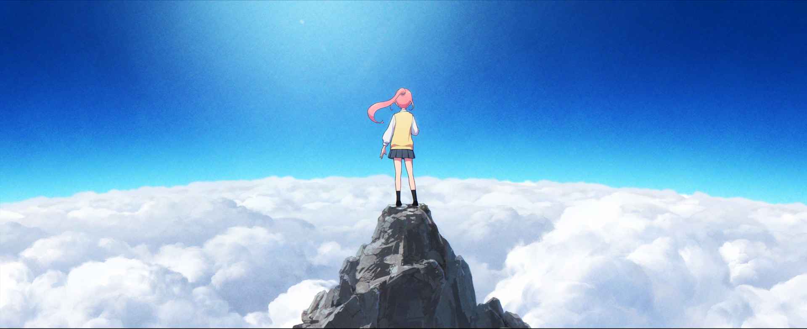
O dia em que o futebol mudou
Depois de Raika, Nagumohara precisa deixar de ser uma ideia e adquirir posições, defesa e goleiro. Kodoukai Kameo (古道飼 亀雄) passa a fazer parte do grupo, e a equipe inicia uma sequência de treinos que mostra como cada integrante aprende de maneira diferente. O caminho chega à região do antigo estaleiro, onde o encontro com os Tumblers leva ao recrutamento de Shisendou Garyuu (四川堂 我流), responsável por proteger o gol.
O capítulo alterna atividades de rua, treinamento e partidas de futebol. O jogo contra o Kai Kamome Soccer Club testa a capacidade de Shisendou de defender um chute decisivo; depois, o confronto com o clube de beisebol apresenta Yagyuu Suruga (柳生 駿河), cuja presença física altera o equilíbrio do grupo. Mais do que acumular jogadores, Nagumohara passa a construir uma estrutura: Kameo acrescenta segurança à defesa, Garyuu oferece uma referência no gol e Yagyuu cria um novo centro de gravidade para o time. É nesse sentido que o capítulo representa o “dia em que o futebol muda”.
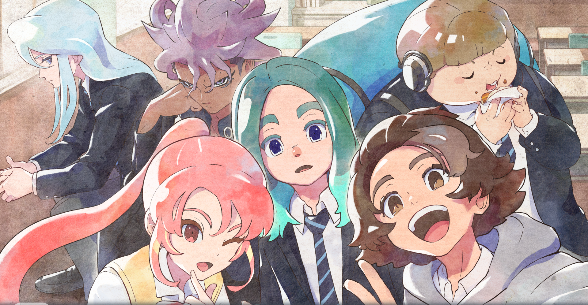
A Invasão do monstro do futebol!
Com o grupo básico reunido, o desafio passa a ser fazer a escola aceitar que aquele clube tem futuro. Nagumohara negocia com outros grupos de atividade, procura uma orientadora e recebe o apoio de Kasumisaki Eiko (香澄崎 栄子). Momochi Yuina (百道 唯奈) também se junta à equipe, e os testes de entrada colocam quinze candidatos diante de três processos de seleção.
Essa escolha é uma das primeiras decisões que dão identidade ao elenco: cinco candidatos são selecionados, enquanto os demais permanecem como possibilidades posteriores. O grupo então enfrenta a preparação e a partida contra Nishinomiya (西ノ宮中). O jogo é construído para expor a distância entre uma equipe recém-formada e um adversário mais pronto: a progressão fixa coloca Nagumohara em desvantagem de três gols no segundo tempo. A reação não é apenas uma virada esportiva; ela confirma que os integrantes conseguem transformar treinamento, funções individuais e comunicação em um plano coletivo.
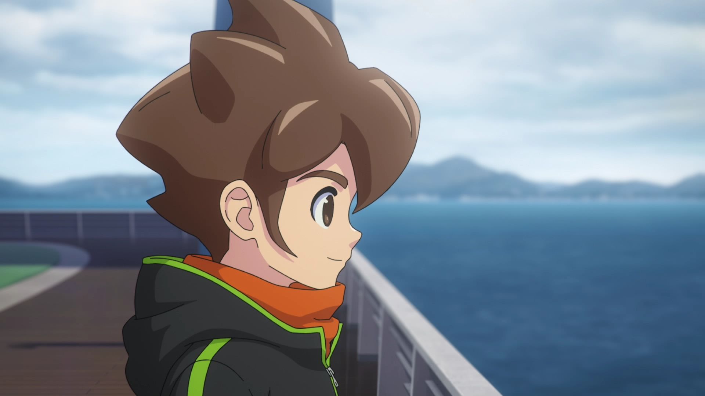
Rival chorão
O quinto capítulo introduz Senno Hika (千乃 妃花) e coloca Nagumohara diante de uma rivalidade que não se resolve apenas com entusiasmo. A equipe enfrenta Hokuyou Gakuen (北陽学園) em uma partida que exige a conclusão de treinamentos específicos. Sakurazaki precisa dominar Shunrai, enquanto Raika trabalha Hyouketsu no Mai; as técnicas não funcionam como enfeites, porque fazem parte das condições que conduzem o jogo.
O capítulo mostra a equipe aprendendo a lidar com a pressão de uma partida em que o poder ofensivo é limitado até que o movimento decisivo seja executado. A vitória contra Hokuyou não apaga as dificuldades anteriores, mas demonstra que os jogadores já conseguem confiar em uma preparação comum. O time começa a deixar para trás a lógica de cada aluno resolver seu próprio problema e passa a vencer porque suas diferenças podem ser coordenadas dentro de um mesmo plano.
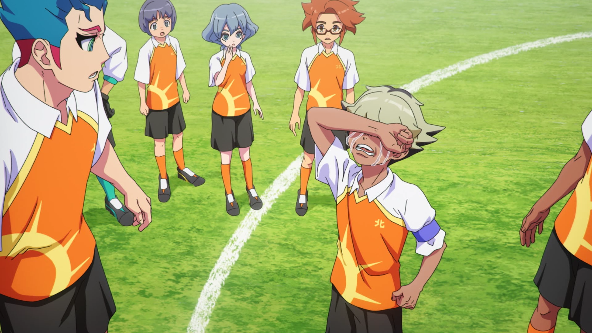
Unam-se, Clube de futbol!
O título do sexto capítulo desloca o conflito da pergunta “quem faz parte do time?” para outra mais difícil: “como essas pessoas jogarão como uma só?”. A equipe retoma contato com jogadores ligados a Hokuyou e realiza uma partida de treino contra o grupo de Shimotsuru. A presença de antigos adversários e de alunos que chegaram por caminhos diferentes obriga os personagens a reconhecer que o clube não pertence mais a um único círculo.
A cidade de Nagumohara também ganha importância. Entre os treinos e a preparação, os jogadores percorrem lugares conhecidos da região, e o time passa a existir como parte da vida local, não apenas como uma atividade dentro da escola. Quando Nagumohara enfrenta Toufuu Ikokukan (東風異国館), o que está em jogo é a capacidade de manter a unidade construída. As táticas de ligação e cooperação aprendidas neste ponto simbolizam a mudança de um elenco de talentos isolados para uma equipe que reconhece os movimentos dos companheiros.
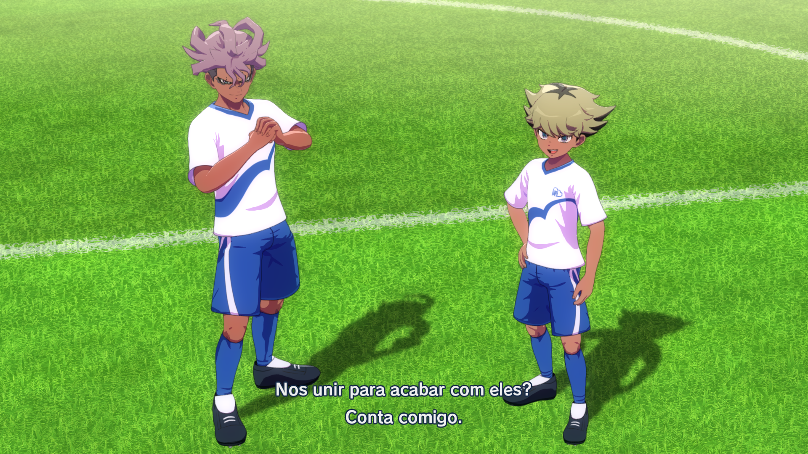
Keshin na tempestade
A campanha entra em uma fase mais ampla quando o grupo deixa o cotidiano inicial de Nagumohara e passa a lidar com novas áreas, observação dos companheiros e recrutamento. Manbe Nagamu (万部 長夢) entra na história, e o jogo libera recursos que permitem procurar novos jogadores e alternar o horário do mundo. A equipe já não está apenas tentando sobreviver como clube; agora precisa entender como se preparar para adversários que conhecem e exploram suas limitações.
Contra Kyoumae Arashiyama (京前嵐山中), a partida é construída em torno do despertar de uma Keshin (化身). O time não consegue marcar antes que a transformação seja ativada, e Kisoji é colocado no centro do momento decisivo. A Keshin não substitui o trabalho coletivo realizado nos capítulos anteriores: ela surge como a nova camada de poder que Nagumohara precisa aprender a integrar. A equipe vence quando consegue converter essa força extraordinária em uma jogada que os companheiros conseguem acompanhar.
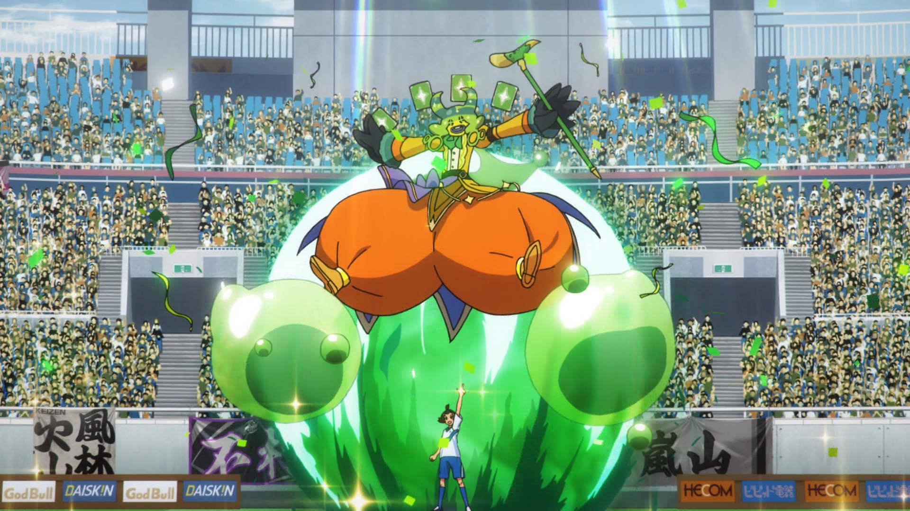
O país das maravilhas do Alice
Na reta final, Nagumohara precisa enfrentar uma equipe capaz de transformar a leitura do jogo em uma arma. Antes do encontro com Teikoku Gakuen (帝国学園), os jogadores realizam partidas de treino contra três escolas e recebem tarefas que exigem a participação de todo o elenco. O time precisa preparar táticas específicas, equipar seus jogadores e chegar ao confronto sem depender de um único protagonista.
O centro desse capítulo é Fuwa Alice (不破 アリス), a principal referência de Teikoku Gakuen. A ameaça não está apenas na força de um chute ou na velocidade de um jogador: Nagumohara precisa superar uma estrutura que parece antecipar seus movimentos. Por isso, a partida funciona como um teste de maturidade. Depois de aprender a se reunir, a equipe precisa aprender a surpreender — modificar o ritmo, proteger suas opções e manter a confiança quando o adversário parece ter uma resposta para cada tentativa.
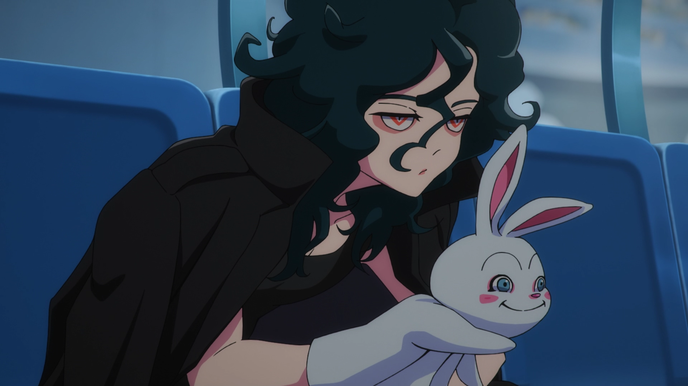
A luz do sol atravessa as nuvens
O capítulo final começa antes do jogo decisivo. Nagumohara procura uma forma de ultrapassar a análise do adversário e realiza um treino contra o clube de beisebol com as posições embaralhadas. O exercício lembra que cada jogador pode precisar cumprir uma função inesperada. Depois de completar a preparação final, o time chega ao confronto contra Raimon, a escola que representa o topo do futebol nacional e a tradição que o novo grupo precisa desafiar.
Antes da decisão, o jogador escolhe acompanhar a partida pelo ponto de vista de Nagumohara ou de Raimon. A estrutura do jogo permanece relacionada, mas o desenvolvimento do segundo tempo e o resultado final mudam. Na rota de Nagumohara, Haru entra no segundo tempo e altera imediatamente o equilíbrio do campo; Unmei também participa da resposta decisiva, e o time muda a distribuição entre ataque e defesa para continuar lutando. Na rota de Raimon, Haru assume o papel de atacante decisivo com técnicas como Inazuma Break e Meteor Drop Fire Tornado. A escolha não apaga a outra possibilidade: depois dos créditos, o jogo retorna ao momento anterior à final para que as duas perspectivas possam ser exploradas.
O encerramento funciona, portanto, como o encontro entre duas formas de entender o futebol. Haru representa o resultado de uma tradição já consolidada; Unmei e Nagumohara representam um time criado por vínculos que não existiam no começo da história. A partida final é o ponto em que essas duas trajetórias deixam de correr em paralelo e passam a responder uma à outra dentro do mesmo campo.
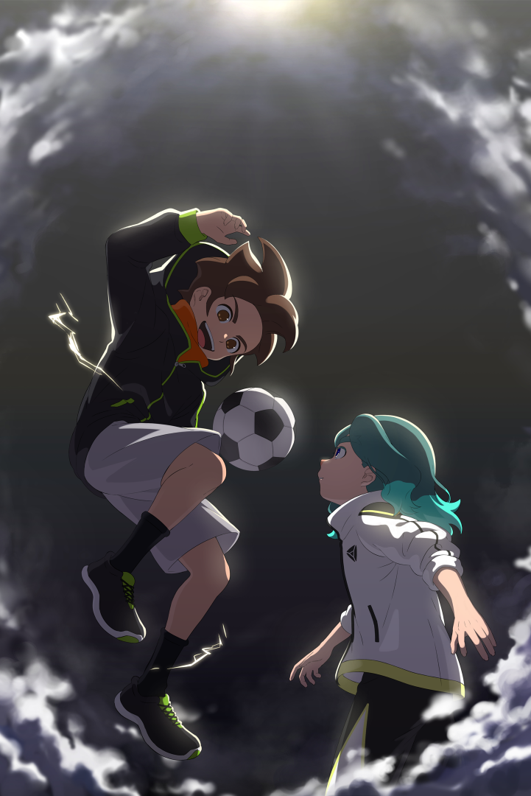
As pessoas que dão sentido à campanha
Os personagens de Victory Road não são apresentados apenas como posições de um time. A narrativa faz com que cada jogador entre por um caminho diferente — escola, dança, clube de beisebol, conflitos locais, antigas rivalidades ou atividades que não têm relação direta com futebol. Abaixo, a história de cada núcleo é apresentada em formato editorial, com o texto de um lado e um espaço reservado para a imagem do momento que melhor representa o personagem. Os nomes seguem a grafia japonesa oficial.
Sasanami Unmei e Endou Haru
笹波 雲明 · 円堂 ハル
Unmei e Haru formam o par narrativo que organiza a nova geração. Unmei escolhe Nagumohara por causa da ausência de futebol e começa a história tentando manter distância do esporte. Haru, ao contrário, já está no centro de Raimon e carrega o sobrenome de Endou Mamoru. A oposição entre eles não é apenas uma rivalidade de habilidade: é a diferença entre alguém que quer escapar da influência do futebol e alguém que vive como se o campo fosse o lugar mais natural do mundo.
O encontro entre os dois modifica a direção da campanha. Unmei reúne e orienta uma equipe que não existia; Haru defende a escola que já possui uma tradição vencedora. Por isso, a final tem valor pessoal para os dois: cada um precisa provar que sua forma de se relacionar com o futebol pode sustentar uma equipe inteira.
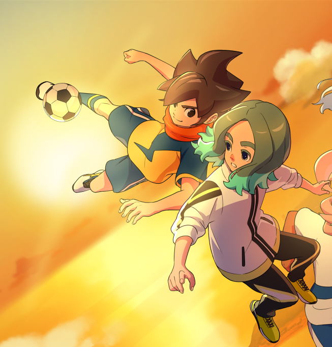
Sakurazaki Jouji e Kisoji Heita
桜咲 丈二 · 木曽路 兵太
Sakurazaki é um dos primeiros rostos que tornam o projeto de Nagumohara possível. Seu físico e seu chute dão ao grupo uma ameaça ofensiva imediata, mas a importância do personagem está também no caminho que o leva a confiar no novo time. Ele entra em uma história que começa com rumores, confrontos locais e a dificuldade de encontrar um lugar para treinar.
Kisoji ocupa um espaço diferente. Seu ritmo, seu humor e sua energia fazem dele um elo entre os companheiros, enquanto a posição de meio-campista o coloca no centro da circulação da bola. A progressão do capítulo 7 dá uma nova dimensão ao personagem quando sua Keshin se torna decisiva. Juntos, Sakurazaki e Kisoji representam as primeiras colunas de Nagumohara: um jogador que impõe força e outro que mantém a equipe em movimento.
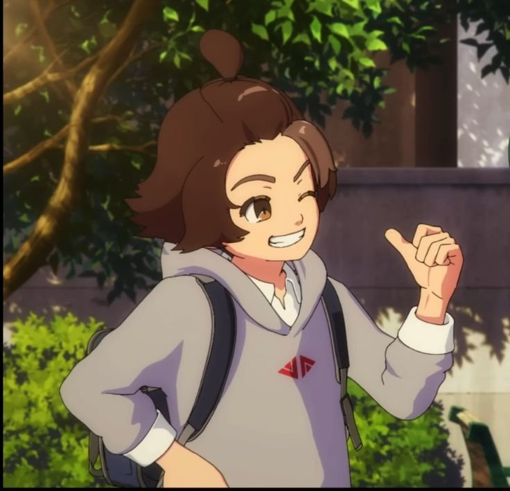
Shinohara Raika
忍原 来夏
Raika chega à história pelo universo da dança, e essa origem é essencial para entender seu papel. Ela não é introduzida como alguém que simplesmente estava esperando um convite para jogar futebol; o capítulo 2 cria uma aproximação por meio de um desafio que exige ritmo, coordenação e presença. Quando ela aceita participar, o clube passa a ser também um espaço para alunos cuja identidade não nasceu no campo.
Como atacante, Raika leva para o futebol a mesma energia que a tornou uma figura popular na escola. Sua técnica Hyouketsu no Mai aparece no capítulo 5 como parte do treinamento obrigatório para superar Hokuyou. Na final pela rota de Nagumohara, ela também é colocada em uma função defensiva, mostrando que sua importância não se limita ao momento de finalizar: ela é uma das personagens que ajudam a equipe a mudar de forma quando a partida exige.
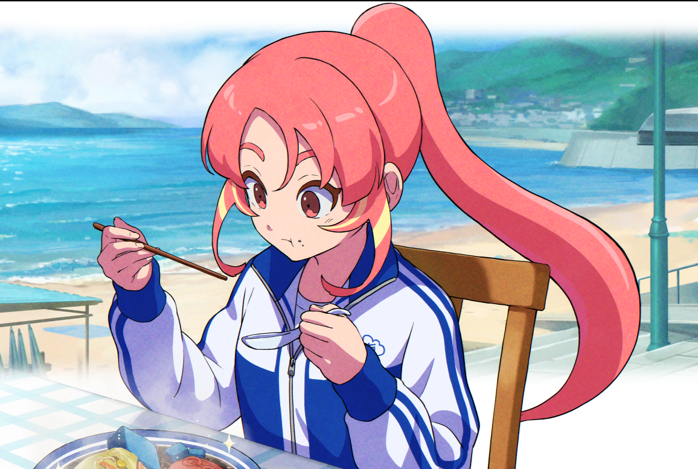
Kodoukai Kameo, Shisendou Garyuu e Yagyuu Suruga
古道飼 亀雄 · 四川堂 我流 · 柳生 駿河
Kameo, Garyuu e Yagyuu entram na etapa em que Nagumohara deixa de ser apenas um grupo de atacantes e passa a ter uma estrutura de campo. Kameo acrescenta resistência à defesa e participa dos treinamentos que ajudam a equipe a transformar insegurança em posicionamento. Garyuu é o goleiro, e sua entrada torna cada partida mais concreta: há um jogador responsável por permanecer entre o time e o gol adversário.
Yagyuu chega por meio do confronto com o clube de beisebol e se destaca pelo porte e pela presença que traz ao elenco. O trio mostra que a formação de Nagumohara não depende de um único tipo de talento. Um protege, outro defende a meta e outro impõe presença física; a equipe cresce quando essas qualidades passam a funcionar em conjunto, e não quando um jogador tenta substituir todos os demais.
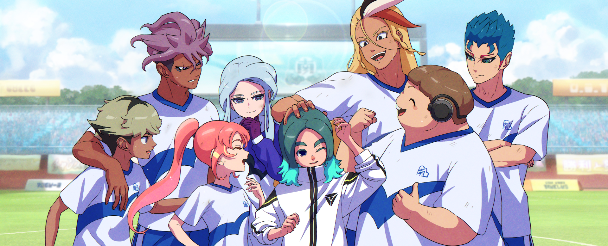
Kasumisaki Eiko, Momochi Yuina, Senno Hika e Manbe Nagamu
香澄崎 栄子 · 百道 唯奈 · 千乃 妃花 · 万部 長夢
O crescimento de Nagumohara depende de pessoas que não aparecem apenas na escalação. Kasumisaki Eiko é a professora que aceita apoiar o grupo e ajuda a transformar uma atividade improvisada em um clube capaz de participar de competições. Momochi Yuina e Senno Hika entram em momentos diferentes da campanha, ampliando a rede de relações que sustenta o time para além dos primeiros recrutas.
Manbe Nagamu aparece na fase em que a equipe passa a explorar novos espaços e novos jogadores. Juntos, esses personagens lembram que o futebol da história é uma construção coletiva: jogadores precisam de orientação, informações, recrutamento, treinamento e alguém disposto a manter o projeto funcionando quando a empolgação inicial diminui.
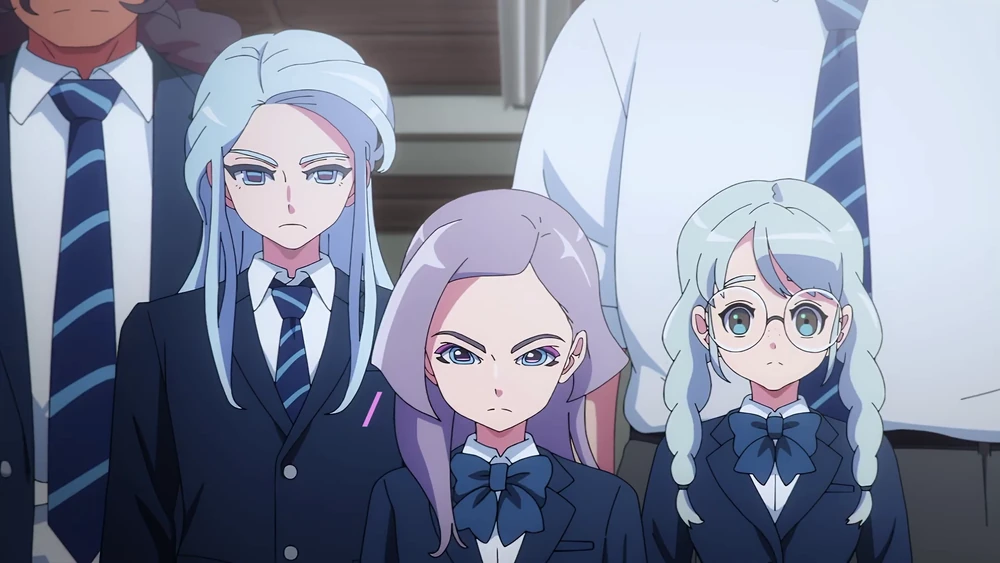
Uma viagem pela história de Inazuma Eleven
O Chronicle Mode (クロニクルモード), ou Modo Crônica, não é uma segunda versão da campanha de Unmei. Sua proposta é atravessar a memória da franquia: o jogador percorre um mapa onde a história completa de Inazuma Eleven aparece organizada em rotas e revive partidas de diferentes períodos ao lado do garoto vindo do futuro Victorio Arno (ヴィクトリオ・アルノ).
O modo transforma a cronologia em uma progressão jogável. Para abrir a próxima etapa, o jogador precisa cumprir as condições de History Check (ヒストリーチェック), recriando os elementos exigidos por cada momento histórico. Em vez de seguir uma única equipe do começo ao fim, a experiência permite montar um elenco com jogadores de diferentes gerações, buscar equipes conhecidas e observar como estilos, técnicas e personagens de épocas distintas podem coexistir em um mesmo time.
Victorio Arno e o futuro olhando para o passado
A presença de Victorio dá ao Chronicle Mode uma perspectiva própria. A viagem não é apresentada como uma simples galeria de partidas antigas; existe um personagem vindo do futuro acompanhando o jogador enquanto os acontecimentos da série são revisitados. O passado deixa de ser apenas material de consulta e passa a ser um caminho que pode ser percorrido, reconstruído e colocado novamente em movimento.
Essa moldura também explica por que o modo pode reunir personagens que, em suas histórias originais, nunca dividiriam o mesmo elenco. O objetivo não é substituir a narrativa de cada jogo anterior, mas permitir que o jogador atravesse essas memórias e crie uma formação que represente a história inteira da franquia.
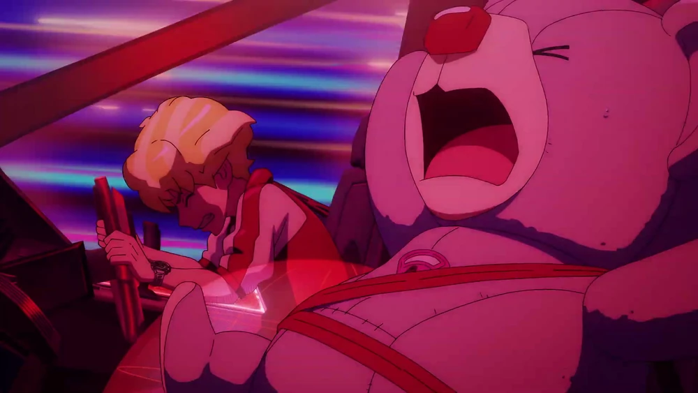
History Check: reproduzir para avançar
O mapa do Chronicle Mode apresenta a história inteira em uma sequência de rotas. Cada trecho possui condições próprias para ser concluído, e o History Check funciona como uma ponte entre a lembrança de uma partida e a próxima etapa. O jogador não avança apenas por vencer de qualquer maneira: precisa observar os requisitos do confronto e reproduzir o aspecto histórico que aquela rota está pedindo.
Esse sistema dá sentido à palavra “crônica”. A progressão reconhece que cada época de Inazuma Eleven possui adversários, técnicas e situações marcantes. Ao cumprir as condições, o jogador não está apenas liberando conteúdo; está refazendo os pontos de passagem que definiram a trajetória do futebol dentro da franquia.
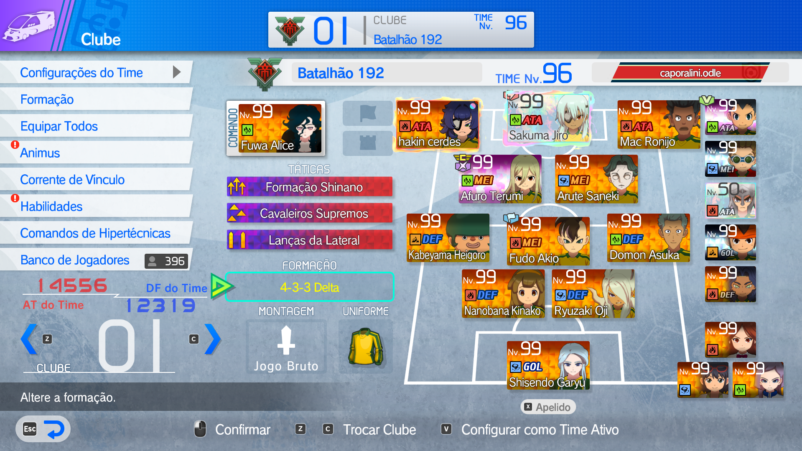
Reunir jogadores de todas as gerações
O grande eixo de coleção do modo é o Players Universe. A página oficial anuncia mais de 5.400 jogadores e mais de 150 equipes, reunindo personagens dos jogos anteriores e da geração de Victory Road; esses números incluem conteúdos previstos para atualizações futuras. Os jogadores obtidos podem ser organizados no Team Dock e no Player Bank, tornando a montagem do elenco parte essencial da experiência.
Essa escala permite que o Chronicle Mode seja lido de duas formas. Para quem acompanha a série desde o início, ele funciona como uma travessia pelas equipes e partidas que ficaram na memória. Para quem está conhecendo o universo agora, o modo oferece um mapa de relações: cada jogador recrutado aponta para uma época, uma escola, uma rivalidade ou uma técnica que pode ser pesquisada e revivida.
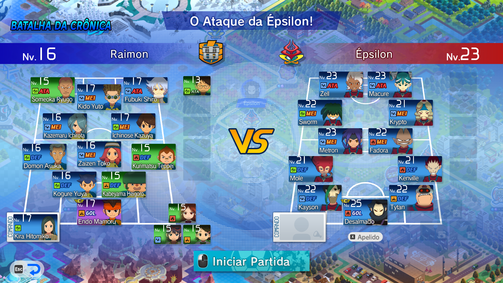
O passado como campo de experimentação
Enquanto o Story Mode acompanha o crescimento emocional e esportivo de Nagumohara, o Chronicle Mode transforma a história da franquia em um espaço de experimentação. O jogador pode comparar formações, combinar estilos e testar como as técnicas de uma geração respondem aos adversários de outra. A diferença entre os modos é importante: um conta uma nova história; o outro convida o jogador a caminhar por muitas histórias já existentes.
Por isso, a Crônica funciona como complemento e não como substituta da campanha principal. O Story Mode dá um rosto novo ao futuro de Inazuma Eleven por meio de Unmei e Haru. O Chronicle Mode mostra o tamanho do caminho que levou até esse futuro e permite que o jogador celebre os times, jogadores e confrontos que formam a memória coletiva da série.
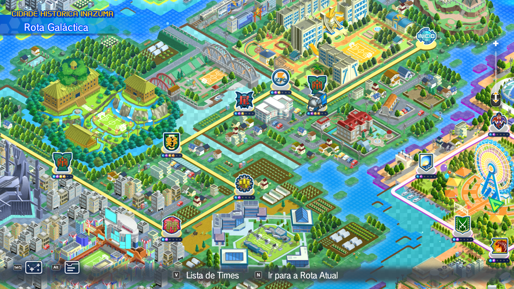
| Elemento | Story Mode | Chronicle Mode |
|---|---|---|
| Foco narrativo | A formação de Nagumohara, a relação entre Sasanami Unmei e Endou Haru e a final contra Raimon. | A travessia da história de toda a franquia ao lado de Victorio Arno. |
| Progressão | Nove capítulos, missões, recrutamento, treinamentos e partidas que desenvolvem a equipe. | Rotas históricas e condições de History Check que reconstroem partidas para liberar o caminho seguinte. |
| Escala | Uma narrativa concentrada no novo elenco de Nagumohara e no Raimon de Haru. | Mais de 5.400 jogadores e mais de 150 equipes anunciados, incluindo futuras atualizações. |